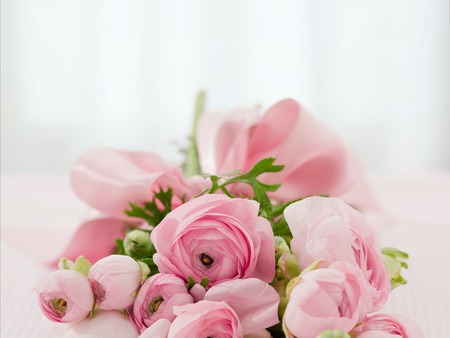
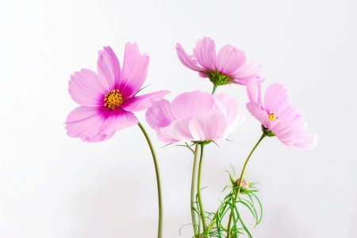

Arte das Flores é um projecto criativo e empreendedor com ideias inovadoras sobre as flores, e o
lugar delas na vida das pessoas.
Com uma vasta experiência nas áreas da decoração e do atendimento ao público, produzindo trabalhos
únicos.
Em todos os trabalhos, são seleccionadas e utilizadas apenas flores dos melhores produtores em Portugal e na
Holanda, a capital mundial das flores.
|  |  | |
| Flores de Luxo | Flores de Decoração | Flores para Eventos |